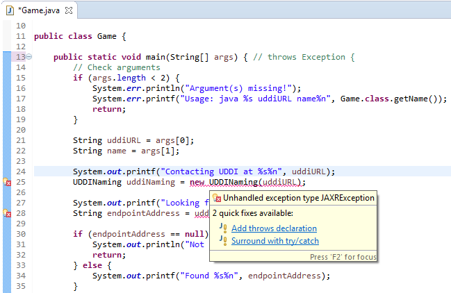

Documentação de apoio à aula
- Introdução aos Web Services : capítulo 9 do livro base da cadeira (Couloris et al., 5th Edition)
- JAX-WS, UDDI e JAX-R
Software necessário
Para realizar esta aula deverá instalar todo o software necessário para o projecto de SD, incluindo o servidor UDDI.
É fortemente recomendado que os diretórios que contêm o código não contenham espaços no seu caminho.
Para testar o servidor UDDI:
- Assegure-se que definiu correctamente a variável de ambiente CATALINA_HOME.
- Inicie o servidor jUDDI, com o comando: startup.bat (Windows) ou startup.sh (Linux).
- Confirme que o servidor de nomes está a correr, visitando: http://localhost:9090/juddiv3/ e confirmando que a consola da administração é apresentada.
Exemplos
Implementation-first
- Web Service Hello World

- Web Service que se regista automaticamente no UDDI - Web Service client
- Programa cliente que pesquisa a localização do Web Service no jUDDI
Guia de laboratório
Implementation-first
Para experimentar o exemplo:
-
São necessárias as bibliotecas para um cliente jUDDI,
que estão definidas no pom.xml.
Verifique a sua existência procurando pela tag <dependencies>.
Servidor (assume-se que o jUDDI esteja a correr)
- cd hello-ws_juddi
-
mvn package
Compila o código-fonte e cria JAR. -
Executar através do Maven:
mvn exec:java
(o nome da classe a executar pelo exec e os argumentos estão definidos no pom.xml)
O servidor deve executar sem erros, disponibilizando o endereço HTTP (endpoint address) e registando no UDDI. Deve consultar o contrato que é gerado automaticamente acrescentando ?WSDL no final do endereço HTTP (Por ex: http://localhost:8080/hello-ws/endpoint?WSDL). - Carregue em enter para encerrar o servidor e eliminar o registo.
Cliente (assume-se que o jUDDI e o servidor estejam a correr)
- cd hello-ws-cli_juddi
-
mvn generate-sources
Comando para correr o wsimport. O cliente obtém o contrato WSDL, e gera as classes de invocação do serviço (em target/classes/)
* A fase generate-sources do Maven é uma das primeiras a ser executada, portanto ao executar uma fase mais adiantada como compile, o cliente chama o wsimport implicitamente. * -
Executar através do Maven:
mvn package exec:java
O cliente deve executar sem erros, consultando o UDDI para descobrir o endereço do servidor, e fazendo uma invocação remota.
Usando o Eclipse:
- Crie/importe um projecto no Eclipse para o servidor e outro projecto para o cliente. Deste modo separará melhor as definições de cada um, evitando erros de utilização de código não partilhado.
-
O wsimport do cliente deverá ser executado através do Maven (mvn generate-sources).
Também é possível correr a partir da linha de comandos (mais informação no ficheiro readme.txt). - Quando o Eclipse está correctamente configurado pode tirar partido da edição de código assistida (auto-complete) e das capacidades de debug.
Exercício
- Partindo dos exemplos, foi construído um novo Web Service Tic Tac Toe (jogo do galo).
- O ponto de partida foi o ttt-local
- O ponto de chegada é o ttt-ws_juddi e ttt-ws-cli_juddi, mas faltam ainda alterações importantes (procurar por "..." no código e pom.xml)!
-
A classe example.ws.uddi.UDDINaming utiliza a API JAX-R
para efectuar as interacções com o servidor UDDI.
Para usar a API JAX-R são necessárias as bibliotecas juddi-client (que devem ser incluídas no ficheiro pom.xml)
Analise as dependências do exemplo anterior e adicione o que estiver em falta dentro da tag <dependencies>. - No servidor (ttt-ws_juddi):
- Consultar a interface TTT e respectiva implementação TTTImpl
- Completar as anotações javax.jws.WebService, indicando a interface implementada: ttt.TTT
@WebService(endpointInterface="...")
public class TTTImpl implements TTT {
-
A localização do UDDI (uddi.url)
Por omissão, o valor é http://localhost:9090. - O nome do serviço a registar (ws.name)
-
O endereço do serviço a disponibilizar (ws.url)
Por exemplo, http://localhost:8080/ttt-ws/endpoint
mvn package exec:java
(a classe a executar pelo exec e os argumentos estão definidos no pom.xml)
http://localhost:8080/ttt-ws/endpoint?WSDL.
- No cliente (ttt-ws-cli_juddi):
- Configurar no ficheiro pom.xml (além da(s) dependência(s) em falta):
-
A localização do UDDI (uddi.url)
- O nome do serviço a pesquisar (ws.name)
-
Run wsimport from Maven:
mvn generate-sources
Gera o código necessário às invocações remotas a partir do WSDL. O WSDL é necessário para a compilação do cliente, pelo que o servidor deverá estar acessível. -
Caso se pretenda gerar novamente as classes,
deve fazer-se:
mvn clean generate-sources
-
Consultar ./target/generated-sources/wsimport ou
faça refresh no package explorer do Eclipse.
-
Verificar que alterações ocorreram nas pastas do seu projecto
em resultado da geração de código a partir do WSDL.
Inspeccionar o conteúdo dos novos ficheiros gerados e tente compreender a função de cada um. -
Abrir e
analisar o ficheiro cujo nome termina em Service.java.
A classe ...Service estende a classe javax.xml.ws.Service, que é a classe que o JAX-WS fornece para acesso ao serviço remoto.
A classe gerada já está configurada para o web service em causa, logo é mais fácil de usar que usando a classe Service directamente. - No Eclipse, o programa cliente Game importa as classes geradas automaticamente, já que estão presentes na directoria de source por omissão.
- No método main() do cliente, criar uma instância de ...Service e chamar o método get...Port(), que retorna uma instância da interface (remota) do seu Web Service. A partir daí, pode invocar qualquer operação chamando métodos dessa interface.
public Game() {
...
...Service service = new ...Service();
... port = service.get...Port();
mvn compile
mvn exec:java
- Se observar o cabeçalho do ponto de entrada do cliente (ttt-ws-cli_juddi), irá reparar que é explícito no código que podem ser lançadas exceções:
public Game() {
public static void main(String[] args) throws Exception {
...
}
...
}
Esta forma de declarar que uma função pode atirar uma excepção não é uma boa prática. Para outra pessoa que veja o código, esta informação de pouco ou nada serve, pois
nada nos diz sobre que tipo de problemas concretos podem ocorrer durante a execução:
Vai agora alterar a declaração da função main no cliente (ttt-ws-cli_juddi) para mencionar as exceções concretas que podem ser atiradas em execução.
Nota: assume-se que está a usar o Eclipse para editar o código nos próximos passos; se desempenhar os próximos passos no Eclipse, poderá fazer uso dos mecanismos auxiliares deste. São sempre uma ajuda bem-vinda para projetos de grandes dimensões...
-
Começe por comentar/remover no código o troço throws Exception:
public Game() { public static void main(String[] args) { // throws Exception { ... } ... }Como consequência, o Eclipse irá sublinhar a vermelho todos os pontos de execução da função main que lançam exceções:public Game() { public static void main(String[] args) { // throws Exception { ... UDDINaming uddiNaming = new UDDINaming(uddiURL); ... String endpointAddress = uddiNaming.lookup(name); ... } ... } -
Se passar com o cursor por cima de uma das expressões sublinhadas (por exemplo, UDDINaming(uddiURL)) e retiver o cursor, o Eclipse
irá dar diferentes sugestões para tentar corrigir a situação:
Escolha o quick-fixAdd throws declaration
-
Repare que a classe de excepção JAXRException foi adicionada à declaração da função main:
public Game() { public static void main(String[] args) throws JAXRException { // throws Exception { ... UDDINaming uddiNaming = new UDDINaming(uddiURL); ... String endpointAddress = uddiNaming.lookup(name); ... } ... }As expressões sublinhadas a vermelho no Eclipse como sendo erros deverão ficar sem o sublinhado.
O programa está agora com informação mais útil sobre as exceções que podem ser lançadas.
Através da mudança da declaração da função main, rapidamente se percebe que as exceções que podem ocorrer estão relacionadas com JAXR.
Perguntas
- Estude o WSDL gerado. Consegue mapear o código Java para as definições WSDL e XSD?
- Onde, no WSDL, é especificado o tipo de argumentos do Web Service?
- Compare o WSDL gerado com o ficheiro ttt.x do servidor SUN RPC do ttt.
- Que informação é comum a ambos os ficheiros?
- Que informação existe no WSDL mas não existe no .x?
- Identifique a função de cada ficheiro gerado no cliente (ignore os ficheiros ObjectFactory.java e package-info.java na sua resposta).
- Como pode modificar o endereço que o cliente utiliza para contactar o servidor?
- Porque é que quando tornou mais específicas as exceções que a função main do cliente (ttt-ws-cli_juddi) pode atirar, ambas as expressões sublinhadas pelo Eclipse deixaram de indicar erro?
- Em que medida é mais informativo e útil declarar a função main do cliente (ttt-ws-cli_juddi) com a exceção JAXRException em vez de Exception?
O resto do enunciado será entregue na aula.
O objectivo será estender ou
modificar as funcionalidades disponíveis.